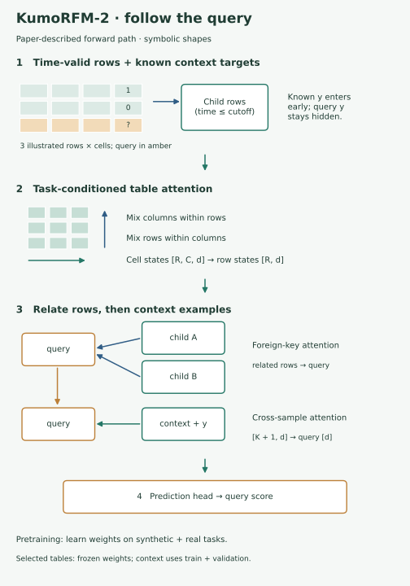
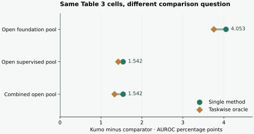

Year 5 · Q4 · Lesson 191 · Read the comparison contract
What does “ahead of the best open model” mean?¶
Lesson 190 turned saved evidence into a research question. Before choosing the baseline for that question, you need a trustworthy performance comparison. A large headline advantage can shrink when you change the eligible methods, the task coverage or the arithmetic.
Your win: build a dated, auditable KumoRFM-2 versus open-method gap table and defend exactly what it means. Read the core in about 15 minutes; use the notebook for implementation and the expandable tables for audit detail. This supports our mission: make a relational-learning research claim that a skeptical reader can check.
See the idea · then trace the details
KumoRFM-2: task information enters early
Four axes of information exchange connect cells, rows, relations and context examples.
1Condition the cell encoding
Column attention + row attention within tables
The smaller table-level network alternates attention axes. Known context labels enter early so feature extraction can depend on the task; query targets stay hidden.
2Mix relational and task context
Foreign-key routes + labeled context examples
The larger network exchanges information along relationships and across context examples. Every example’s context must respect its own time cutoff.
3Read the query target
Task-conditioned representation → prediction
Frozen base weights produce in-context predictions in the selected paper comparison. Fine-tuning, lagged targets and ensembling require separate protocol descriptions.
Pause and predict: Would adding the task label only at the final prediction head depict the same mechanism?
No. Early task conditioning lets intermediate feature extraction depend on the labeled context.
Answer: No. Early task conditioning lets intermediate feature extraction depend on the labeled context.
2 · Model architecture: where the task enters¶
In plain terms. The model first learns which cells matter for this task. It then combines related rows and labeled examples to predict a query row.
Context means examples whose targets are already known at the relevant cutoff. The query is the example whose target we want. A foreign key connects a row to a row in another table. The query label stays hidden; known context labels enter early, so feature extraction can depend on the task.
The paper describes a small table-level network alternating attention across columns and rows. A larger network mixes row representations along foreign-key links and across context examples. The four axes are directions of information exchange, not four mandatory loss terms. The final representation predicts the query target. Primary reading: §3 and Figure 3.


Trace the highlighted query: its cells become a row vector; connected child rows contribute information; labeled context examples inform the prediction. Each context subgraph respects its example's time cutoff. The paper also describes local/history and recent global context, lagged targets, and ensembling. These are protocol choices to audit, not details to replace with convenient defaults.
Pretraining learns weights across synthetic and real tasks. In the selected paper tables, in-context inference uses frozen base-model weights and at most 10,000 context examples, drawing from training and validation splits. Fine-tuning is a separate experiment. The schematic uses symbolic dimensions: R rows, C columns, d embedding width and K context examples. It does not invent unreleased widths, layer counts, weights or a trainer. §§3–4.
Predict: if the desired target changes from churn to future spending, which stage should first be able to use that task information? Explain why simply concatenating a task label at the final head would depict a different mechanism.
3 · Freeze the question before computing the gap¶
A comparison contract records source version, tasks, metric, eligible methods and aggregation. Our frozen source is KumoRFM-2 v1, 14 April 2026, Tables 3, 4, 7 and 8. It contains 28 task columns across four suites of results. Every one of its 401 task cells and 90 summary cells is preserved and independently parsed.
“Open” here means an inspected open implementation. It does not certify every backend's weight license, the original training corpus or historical reproducibility. The bounded foundation pool is RDBLearn and Griffin. The bounded supervised pool is LightGBM, GraphSAGE, RelGNN and RelGT. Other published rows remain in the complete source tables but are outside this access audit. OpenRFM is a later paper and has no row in this frozen comparison.
All included values are paper-reported test results; we did not independently establish equal information access across the authors' runs. The paper permits training-plus-validation context for Kumo. Treat the resulting gap as descriptive published evidence, not as a controlled architecture ablation.
Two different questions:
- Single method: which eligible method has the best aggregate across all tasks in this table? This is a retrospective test-set summary; a deployable choice needs validation data.
- Taskwise oracle: what if we picked the best eligible test result separately for every task? This is an optimistic envelope, not one trained model or a valid selection policy.
Require complete coverage. A missing task is not a zero or a loss. Do not let a method evaluated on one easy task compete against an all-task average.
4 · Work one calculation, then change the pool¶
Worked example — driver-dnf. The displayed AUROCs are 84.59 for KumoRFM-2 and 70.87 for RDBLearn. The difference is 13.72 percentage points, or 0.1372 on a 0–1 AUROC scale. It is not a 13.72% relative improvement.
For a regression task, smaller MAE is better. On ratebeer/user-count, 7.298 versus 7.374 means 0.076 raw MAE units in Kumo's favor. These units belong to that task. To combine regression tasks, first divide each method's MAE by the same task's LightGBM MAE, then average those ratios. The LightGBM reference is therefore exactly 1.
AUROC gap = Kumo − comparator; MAE gap = comparator − Kumo.
Normalized MAE = mean over tasks of (method MAE ÷ LightGBM MAE).
Here T is the number of tasks, t indexes a task, and m names a method. A positive gap means Kumo is better. For regression aggregates we subtract normalized means; that result is dimensionless, not a percentage or a raw MAE.
Predict before revealing: will the “best open” gap grow or shrink if supervised methods become eligible?


| Table | Bounded open pool | Best single method | Kumo advantage | Unit |
|---|---|---|---|---|
| 3 | foundation | RDBLearn | 4.053333 | AUROC points |
| 3 | supervised | RelGNN | 1.541667 | AUROC points |
| 4 | foundation | No eligible row | Missing | AUROC points |
| 4 | supervised | GraphSAGE | 1.590000 | AUROC points |
| 7 | foundation | RDBLearn | 0.083535 | normalized MAE |
| 7 | supervised | RelGNN | 0.039161 | normalized MAE |
| 8 | foundation | No eligible row | Missing | normalized MAE |
| 8 | supervised | GraphSAGE | 0.024398 | normalized MAE |
Try it: change the pool, then the selection rule. Keep the source fixed. Explain why a different gap need not imply that any model changed.
Visible Python · comparison direction and eligibility
def signed_gap(target, comparator, metric):
"""Positive means Kumo is better; AUROC inputs use published percent units."""
if metric not in ('AUROC', 'MAE') or not all(math.isfinite(x) for x in (target, comparator)):
raise ValueError('Require finite values and AUROC or MAE')
return target - comparator if metric == 'AUROC' else comparator - target
def eligible(metadata, pool):
"""Eligibility is an audited policy, not a claim of full reproducibility."""
if pool not in ('foundation', 'supervised', 'all'):
raise ValueError('Unknown pool')
return (metadata.get('access') == 'open_code'
and metadata.get('protocol') == 'reported_same_table'
and metadata.get('family') in ('foundation', 'supervised')
and (pool == 'all' or metadata['family'] == pool))
5 · Audit the arithmetic before repeating the headline¶
Our independent parser and rational-arithmetic check found five aggregates outside displayed-rounding bounds. For example, the five Table 4 KumoRFM-2 cells average to 79.782, while the paper prints 79.96. A printed value with two decimals represents approximately ±0.005 rounding uncertainty. Even allowing that uncertainty in both task cells and summary cannot bridge this difference.
| Table | Method | Published | From cells | Cell-rounding bounds |
|---|---|---|---|---|
| 3 | RT_zero | 67.730000 | 70.649167 | 70.644167–70.654167 |
| 3 | RDBLearn | 75.970000 | 75.547500 | 75.542500–75.552500 |
| 4 | KumoRFM-1 | 76.220000 | 76.098000 | 76.093000–76.103000 |
| 4 | KumoRFM-2 | 79.960000 | 79.782000 | 79.777000–79.787000 |
| 8 | KumoRFM-1 | 0.712000 | 0.720692 | 0.719851–0.721534 |
This is a reproducible discrepancy under the stated arithmetic. It does not identify its cause. Different unpublished inputs, aggregation choices or a transcription problem would require author clarification. We preserve the published number alongside the recomputed one.
Ranks need a contract too. Rank 1 means best within a specified method pool. Our ranks include all displayed rows in that table and assign tied displayed scores their average occupied rank. Two tied leaders therefore receive 1.5 each. 34 of 45 printed mean ranks differ from this rule. Hidden precision can break displayed ties; a different rank pool can also change ranks. Those causes are not established here. Rank differences are reported as DIFFERS_DISPLAYED, not automatically as paper errors.
Scope check. Rounding intervals are bounds from printed precision, not statistical confidence intervals. The tables do not give us per-seed predictions. Do not invent error bars, a significance test or a fresh-run uncertainty estimate.
Table 3 · RelBenchV1 · AUROC
| Method | f1/dnf | f1/top3 | avito/click | avito/visit | event/repeat | event/ignore | trial/out | amazon/user | amazon/item | stack/eng | stack/badge | hm/churn | Published avg | Recomputed avg | Published rank | Displayed rank |
|---|---|---|---|---|---|---|---|---|---|---|---|---|---|---|---|---|
| LightGBM | 68.56 | 73.92 | 53.60 | 53.05 | 68.04 | 79.93 | 70.09 | 52.22 | 62.54 | 63.39 | 63.43 | 55.21 | 63.67 | 63.665000 | 16.75 | 15.750000 |
| DS+LightGBM | 69.80 | 82.40 | 64.27 | 64.46 | 75.42 | 84.23 | 72.00 | 67.60 | 81.80 | 90.30 | 86.20 | 69.00 | 75.62 | 75.623333 | 7.75 | 6.916667 |
| DS+AutoGluon * | 70.01 | 82.53 | 65.66 | 65.87 | 74.85 | 82.31 | 70.51 | 68.12 | 80.45 | 89.94 | 85.38 | 68.71 | 75.36 | 75.361667 | 8.5 | 7.500000 |
| DS+TabPFN-2.5 * | 71.16 | 77.70 | 64.21 | 64.53 | 76.43 | 85.70 | 70.75 | 66.28 | 79.83 | 89.07 | 85.08 | 68.31 | 74.92 | 74.920833 | 9.5 | 8.416667 |
| GraphSAGE | 72.62 | 75.54 | 65.90 | 66.20 | 76.89 | 81.62 | 68.60 | 70.42 | 82.81 | 90.59 | 88.86 | 69.88 | 75.83 | 75.827500 | 6.42 | 5.416667 |
| HGT | 70.77 | 70.75 | 63.76 | 64.32 | 64.96 | 82.47 | 58.37 | 66.43 | 77.97 | 88.47 | 86.08 | 66.95 | 71.78 | 71.775000 | 12.5 | 11.500000 |
| HGT_PE | 71.17 | 76.27 | 64.57 | 64.95 | 65.36 | 81.61 | 59.21 | 66.19 | 78.03 | 88.17 | 85.66 | 65.69 | 72.24 | 72.240000 | 11.75 | 10.750000 |
| RelGNN | 75.29 | 85.69 | 68.23 | 66.18 | 79.61 | 86.18 | 71.24 | 70.99 | 82.64 | 90.75 | 88.98 | 70.93 | 78.06 | 78.059167 | 3.75 | 3.000000 |
| RelGT | 75.87 | 83.52 | 68.30 | 66.78 | 76.09 | 81.57 | 68.61 | 70.39 | 82.55 | 90.53 | 86.32 | 69.27 | 76.65 | 76.650000 | 6.0 | 5.041667 |
| LLM1 | 75.80 | 91.40 | 59.80 | 62.70 | 71.40 | 69.30 | 57.40 | 58.10 | 62.10 | 78.00 | 80.00 | 59.80 | 68.82 | 68.816667 | 13.92 | 12.958333 |
| LLM2 | 80.03 | 87.11 | 53.36 | 54.07 | 70.11 | 68.65 | 59.17 | 62.55 | 73.41 | 81.23 | 79.99 | 63.81 | 69.46 | 69.457500 | 13.92 | 12.916667 |
| TabPFN-2.5 * | 61.21 | 77.35 | 54.44 | 51.45 | 69.10 | 70.91 | 71.74 | 57.14 | 59.30 | 59.66 | 52.26 | 54.99 | 61.63 | 61.629167 | 16.42 | 15.500000 |
| Griffin | 57.70 | 82.50 | 45.90 | 60.70 | 71.88 | 83.27 | 51.00 | 62.30 | 69.00 | 77.50 | 73.50 | 60.20 | 66.29 | 66.287500 | 15.42 | 14.416667 |
| RT_zero | 81.20 | 89.30 | 59.50 | 61.80 | 73.22 | 77.47 | 51.80 | 64.00 | 70.90 | 75.70 | 80.10 | 62.80 | 67.73 | 70.649167 | 13.25 | 12.250000 |
| GNN+TabPFN | 64.26 | 74.67 | 60.68 | 65.35 | 73.58 | 84.13 | 56.68 | 64.30 | 77.89 | 87.48 | 85.34 | 64.34 | 71.56 | 71.558333 | 12.58 | 11.583333 |
| RDBLearn | 70.87 | 79.69 | 69.04 | 65.49 | 75.04 | 82.52 | 71.58 | 67.57 | 82.07 | 89.39 | 85.26 | 68.05 | 75.97 | 75.547500 | 8.08 | 7.166667 |
| KumoRFM-1 | 82.41 | 91.07 | 64.85 | 64.11 | 76.08 | 89.20 | 70.79 | 67.29 | 79.93 | 87.09 | 80.00 | 67.71 | 76.71 | 76.710833 | 8.33 | 7.375000 |
| KumoRFM-2 | 84.59 | 92.18 | 67.42 | 69.41 | 81.66 | 90.83 | 72.03 | 69.10 | 82.17 | 89.40 | 87.15 | 69.27 | 79.6 | 79.600833 | 3.08 | 2.541667 |
Table 4 · RelBenchV2 · AUROC
| Method | mimic/stay | ratebeer/beer-churn | ratebeer/user-churn | ratebeer/dormant | arxiv/citation | Published avg | Recomputed avg | Published rank | Displayed rank |
|---|---|---|---|---|---|---|---|---|---|
| LightGBM | 51.81 | 76.21 | 83.92 | 75.79 | 71.21 | 71.79 | 71.788000 | 3.8 | 3.800000 |
| GraphSAGE | 55.01 | 78.67 | 94.27 | 80.51 | 82.50 | 78.19 | 78.192000 | 2.0 | 2.000000 |
| KumoRFM-1 | 56.33 | 75.06 | 91.38 | 77.10 | 80.62 | 76.22 | 76.098000 | 2.8 | 2.800000 |
| KumoRFM-2 | 55.28 | 83.84 | 97.43 | 80.65 | 81.71 | 79.96 | 79.782000 | 1.75 | 1.400000 |
Table 7 · RelBenchV1 · MAE
| Method | f1/pos | avito/ctr | event/attend | trial/adverse | trial/success | amazon/user | amazon/item | stack/votes | hm/sales | Published avg | Recomputed avg | Published rank | Displayed rank |
|---|---|---|---|---|---|---|---|---|---|---|---|---|---|
| Global Median | 4.399 | 0.043 | 0.264 | 57.533 | 0.462 | 16.783 | 64.234 | 0.068 | 0.076 | 1.062 | 1.062056 | 12.78 | 12.222222 |
| Entity Median | 8.519 | 0.046 | 0.269 | 57.930 | 0.441 | 17.423 | 66.436 | 0.069 | 0.078 | 1.19 | 1.190416 | 14.0 | 14.055556 |
| LightGBM | 4.170 | 0.041 | 0.264 | 44.011 | 0.425 | 16.783 | 60.569 | 0.068 | 0.076 | 1.0 | 1.000000 | 10.22 | 9.611111 |
| DS+LightGBM | 3.963 | 0.044 | 0.284 | 40.581 | 0.407 | 13.928 | 41.122 | 0.065 | 0.036 | 0.879 | 0.879709 | 5.11 | 4.888889 |
| DS+AutoGluon * | 4.251 | 0.045 | 0.256 | 44.706 | 0.430 | 14.399 | 45.390 | 0.068 | 0.043 | 0.918 | 0.920819 | 7.11 | 7.388889 |
| DS+TabPFN-2.5 * | 4.373 | 0.044 | 0.318 | 47.168 | 0.432 | 15.631 | 47.908 | 0.080 | 0.059 | 1.009 | 1.009968 | 10.11 | 10.111111 |
| GraphSAGE | 4.022 | 0.041 | 0.258 | 44.473 | 0.400 | 14.313 | 50.053 | 0.065 | 0.056 | 0.918 | 0.918376 | 6.33 | 6.166667 |
| HGT | 4.226 | 0.046 | 0.264 | 45.169 | 0.443 | 15.412 | 55.868 | 0.068 | 0.064 | 0.988 | 0.987427 | 10.44 | 10.611111 |
| HGT_PE | 4.392 | 0.048 | 0.261 | 42.648 | 0.440 | 15.864 | 55.849 | 0.068 | 0.064 | 0.992 | 0.991817 | 10.0 | 9.833333 |
| RelGNN | 3.798 | 0.037 | 0.238 | 44.461 | 0.301 | 14.230 | 48.767 | 0.065 | 0.054 | 0.861 | 0.861405 | 4.44 | 4.277778 |
| RelGT | 3.917 | 0.035 | 0.250 | 43.992 | 0.326 | 14.267 | 48.922 | 0.065 | 0.054 | 0.869 | 0.870087 | 4.67 | 4.555556 |
| TabPFN-2.5 * | 4.446 | 0.044 | 0.527 | 55.187 | 0.469 | 17.513 | 60.996 | 0.104 | 0.096 | 1.258 | 1.259572 | 14.78 | 14.777778 |
| Griffin | 4.460 | 0.050 | 0.461 | 78.232 | 0.463 | 35.590 | 53.214 | 0.092 | 0.151 | 1.471 | 1.471243 | 15.44 | 15.444444 |
| RT_zero | 2.901 | 0.058 | 0.379 | 73.999 | 0.455 | 18.802 | 57.996 | 0.110 | 0.089 | 1.24 | 1.240490 | 14.0 | 14.000000 |
| RDBLearn | 3.834 | 0.034 | 0.237 | 43.913 | 0.424 | 14.540 | 48.559 | 0.068 | 0.064 | 0.906 | 0.905779 | 5.89 | 5.555556 |
| KumoRFM-1 | 2.747 | 0.035 | 0.264 | 58.231 | 0.417 | 16.161 | 55.254 | 0.065 | 0.040 | 0.908 | 0.908231 | 7.22 | 6.888889 |
| KumoRFM-2 | 2.854 | 0.034 | 0.235 | 43.293 | 0.433 | 13.921 | 46.992 | 0.064 | 0.034 | 0.822 | 0.822244 | 2.67 | 2.611111 |
Table 8 · RelBenchV2 · MAE
| Method | ratebeer/user-count | arxiv/publication | Published avg | Recomputed avg | Published rank | Displayed rank |
|---|---|---|---|---|---|---|
| Global Median | 15.124 | 0.577 | 0.872 | 0.871597 | 4.5 | 4.750000 |
| Entity Median | 13.079 | 0.874 | 1.079 | 1.078717 | 5.0 | 5.000000 |
| LightGBM | 20.350 | 0.577 | 1.0 | 1.000000 | 5.0 | 5.250000 |
| GraphSAGE | 7.374 | 0.513 | 0.626 | 0.625720 | 2.0 | 2.000000 |
| KumoRFM-1 | 11.063 | 0.518 | 0.712 | 0.720692 | 3.0 | 3.000000 |
| KumoRFM-2 | 7.298 | 0.487 | 0.601 | 0.601322 | 1.0 | 1.000000 |
- marks a baseline evaluated by the Kumo authors. Other baseline values were taken from cited work. Source table ranks use an unestablished pool/precision convention; recomputed ranks use every displayed row.
6 · Keep the date visible¶
A frozen paper comparison answers “what does this source report?” It cannot certify today's global SOTA. Our bounded 2 October 2026 source check found a June OpenRFM paper and a July RDBLearn v1.1 paper. These need separate protocol review before their results can enter a comparable pool. The April tables stay immutable. OpenRFM v1 · RDBLearn update v1.
The source-access attempt also encountered HTTP 404 for the Kumo repository and HTTP 401 for a leaderboard data endpoint. Those are retrieval failures, not proof that the resources do not exist. Keep the failed attempts, leave current global SOTA NOT_ESTABLISHED, and state the actual search boundary. Frozen tracking ledger.
For Lesson 192's open-model reproduction, use this table to shortlist a baseline. Then audit weights, data identity, temporal rules, feature construction, context/seed choices, validation-only selection and aggregate cost before execution. An inspected repository alone does not finish that contract.
7 · Build it and defend it¶
Student notebook · Executed solution · Read the executed lab · Reference card · Reproduction protocol.
The notebook embeds the frozen source packet and the full parser/reconstruction implementation. Three learner functions control metric direction, evidence eligibility and complete-coverage comparison. Its checks feed those functions into the real 401-cell reconstruction. It uses Python's standard library; no model, API key or repository checkout is needed.
EXIT: submit one gap with its table, pool, rule, units and source date. Explain one published/recomputed discrepancy, one missing comparison and one condition that would make a fresh run comparable. State how your baseline choice changes the research question from L190.
Ask the teaching agent about any unclear calculation or bring your written defense for feedback. Tomorrow, reconstruct the direction of both gap formulas from memory. In one week, defend the difference between one method and a taskwise oracle without reopening the table.